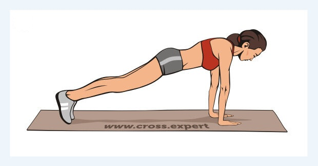
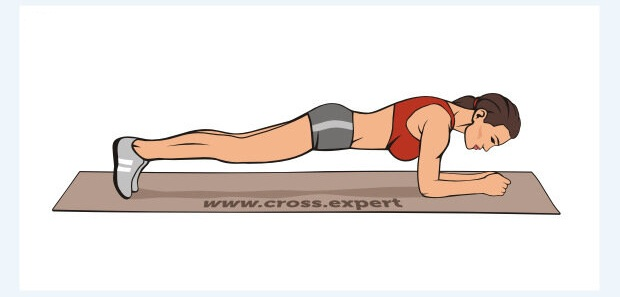
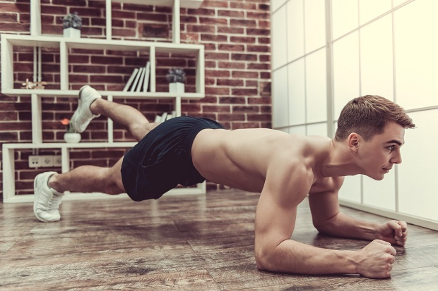
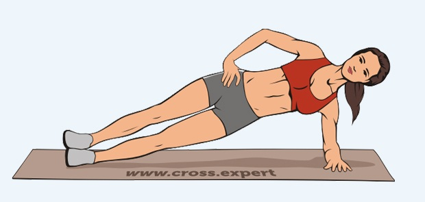
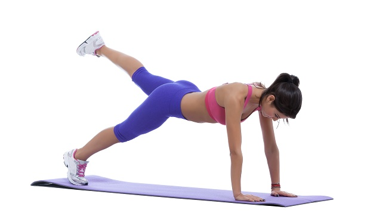
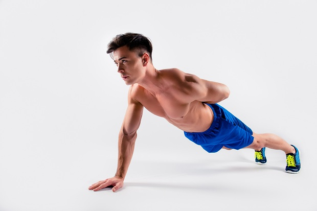

Планка
Упражнение планка считается одним из самых эффективных упражнений для прокачки мышц пресса. Популярность это упражнение получило благодаря простоте тренировки и мнению о том, что оно хорошо помогает при похудении. Так ли это? Об этом и о том, как правильно делать это упражнение, мы расскажем в нашем материале сегодня.

Упражнение уникально тем, что без приспособлений и тренажеров прорабатывает одновременно несколько различных групп мышц. Это мышцы пресса, плечевого пояса, рук, спины, ног, ягодицы.
Упражнение планка также повышает выносливость всего организма, помогает худеть благодаря ускорению метаболизма и даже улучшает психоэмоциональное состояние. Не важно, предпочитаете ли вы групповые занятия в кроссфит или индивидуальные тренировки, именно практика планки позволит сделать выполнение других упражнений безопасными и эффективными.
Виды планок
Все виды планок имеют общие правила и похожую технику выполнения. Однако отличаются положением тела, рук, ног, наклоном корпуса. Соответственно в каждой разновидности упражнения могут включаться разные группы мышц.
- Планка на прямых руках. Это классический вариант упражнения. Выполняется статически
и является лучшим упражнением для улучшения стабилизационных способностей мышц живота.
 - Планка на локтях является усложненным вариантом. Угол между корпусом и полом
уменьшается,
вследствие чего стоять становиться тяжелее. Кроме мышц пресса в работу включаются большая грудная мышца,
дельтовидная, большая квадратная мышца спины, мышцы передней поверхности бедра.
 - Планка с вытянутой рукой или ногой. Усиливает эффективность
упражнения за счет уменьшения точек опоры. Дает большую нагрузку на мышцы кора, хорошо развивает
равновесие.
 - Боковая планка. То есть вы стоите в фиксированном положении на 1 руке и на 1 ноге.

Упражнение планка существует более чем в ста различных вариациях. Сегодня мы подробно рассмотрим два классических типа: на руках и на локтях. Упражнение кажется простым, однако, если нарушить технику выполнения, эффективность от него может сойти на нет. Поэтому прежде чем стать в планку, внимательно ознакомьтесь с текстом ниже и тогда польза от упражнения будет максимальной.
Техника выполнения:
Сейчас мы разберемся, как делать упражнение планка на примере 2 классических техник выполнения — на прямых руках и на локтях.
Планка на прямых руках
Помните, что важна именно правильная техника. Далее, разобравшись с нюансами упражнения, вы постепенно сможете улучшать и временные показатели. В первый день занятий простоять в планке 20 секунд для новичка будет достаточно. С каждым днем свой результат можно будет постепенно улучшать. Тогда вы добьетесь наилучших результатов.
Если с вами нет наставника, который проконтролирует правильность техники, то выполняйте упражнение перед зеркалом. Также воспользуйтесь ковриком для фитнеса.
- Примите упор лежа. Из этого положения поднимитесь таким образом, чтобы опираться только на ладони и пальцы ног. Кисти рук должны находится точно под плечами.
- Ноги не сгибайте, держите их ровными
- Положение спины — абсолютно прямое. Лопатки опущены. Не округляйте спину и не выпячивайте копчик. Взгляд направлен вперед
- Пресс необходимо держать в максимальном напряжении и не расслаблять до конца выполнения планки.
- Стопы можно поставить вместе, а можно развести до ширины плеч. Чем шире будут стоять стопы, тем легче выполнять упражнение, однако при этом вы уменьшите эффективность работы мышц.
- Дыхание — спокойное и непрерывное
Усложнение упражнения
- Планка на одной ноге. Необходимо встать, соблюдая все вышесказанные правила и поднять
вверх одну ногу, удерживая положение тела в статике. Выполнив упражнение с одной ногой, повторите с
другой. Для поддержания баланса руки можно поставить слегка шире плеч.
 - Планка с вытянутой рукой. Стоя в планке, вытягивайте одну руку вперед либо спрячьте ее
за спину и держите равновесие, следите за сохранением прямой линии спины. Повторите те же действия с
другой рукой.

Планка на локтях
Принцип исполнения такой же как в планке на руках. Единственное отличие, в том, что опираетесь вы на предплечья. Для этого необходимо согнуть руки, локти нужно держать строго под плечами. Следите, чтобы позвоночник не прогибался, копчик не выпячивался, а пресс оставался в напряжении.
Усложнение упражнения
- На одной ноге. Опираясь на локти, поднимите одну ногу вверх и задержитесь в таком положении. Затем повторите со второй ногой.
- С вытянутой рукой. Находясь в планке на локтях, вытяните руку вперед. Простояв неподвижно в таком положении несколько секунд, поменяйте руку.
- Планку на руках и локтях можно объединить в одно упражнение. Сначала займите позицию на прямых руках, затем опуститесь на локти, поочередно согнув сначала одну руку, потом другую. Затем возвращайтесь в начальное положение. Повторите несколько раз.
Польза и вред планки
Чем полезно упражнение планка? Условно пользу от него можно разбить на несколько составляющих, таких как польза для спины, ног и пресса. Давайте поговорим подробно о каждом случае в ракурсе пользы и вреда от упражнения.
Польза для спины
Болями в спине страдают большинство людей, которые ведут малоподвижный образ жизни. Спина является уязвимым местом как у профессиональных атлетов, так и у рядовых посетителей зала. Основная причина такого явления — слабые мышцы кора. Польза упражнения планка для спины заключается в укреплении групп мышц, которые отвечают за стабилизацию нашего тела. Во время планки прорабатываются крупные мышцы спины: прямая, широчайшая, мышцы поясницы и шеи. Такая симметричная нагрузка на пресс и спину делает осанку правильной, а живот подтянутым. Выполняя упражнение планка регулярно, вы сможете избавиться от болей в спине, заметите прогресс в силовых упражнениях, минимизируете возможность появления травм позвоночника. Планка для спины послужит профилактикой остеохондроза.
Польза для ног
В планке работают практически все мышцы ног. В различных видах упражнения в большом напряжении находятся средняя и большая ягодичные мышцы, работают мышцы бедер и икроножные. Делая планку регулярно, вы заметите, что мышцы ног укрепляются, обретают тонус, ягодицы становятся более подтянутыми, а ноги стройными. Планка для ягодиц имеет еще один положительный эффект — уменьшение целлюлита, вследствие улучшения микроциркуляцию крови в этой зоне. Приступая к упражнению, следует учесть большое напряжение, которое приходится на ноги.
Хотя классическая планка выполняется в статическом положении и оказывает щадящее влияние на суставы, в некоторых случаях, например, при проблемах с голеностопом, упражнение может принести вред.
Для похудения
Отличная новость для желающих похудеть. Выполняя планку, вы сможете быстрее избавиться от лишних килограммов. Как известно, эффект похудения достигается в случае дефицита калорий. То есть необходимо тратить энергии больше, чем потреблять с едой. Сочетая правильное питание и упражнение планка, вы значительно ускорите свой метаболизм, что приведет к похудению. Польза для худеющих еще и в том, что систематическое выполнение упражнения подтягивает кожу и делает ее более упругой.
Противопоказания
Мы уже выяснили, что дает планка и какова польза упражнения. Однако обратите внимание, что выполнение планки может нанести и вред. Оно противопоказано людям с травмами позвоночника, межпозвоночной грыжей, беременным. В послеоперационный и послеродовой период тоже следует делать упражнение с осторожностью. Таким людям следует пройти консультацию у врача, иначе можно нанести серьезный вред своему здоровью.